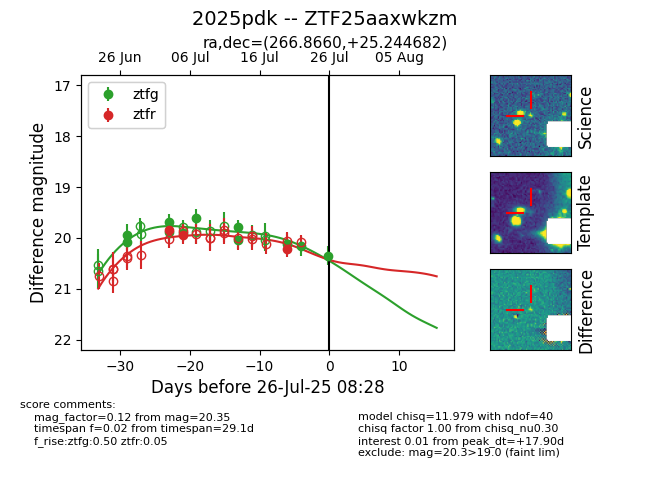

Target 2025pdk at 2025-07-26 08:28, see:
FINK: fink-portal.org/2025pdk
Lasair: lasair-ztf.lsst.ac.uk/objects/2025pdk
ALeRCE: alerce.online/object/2025pdk
TNS: wis-tns.org/object/2025pdk
YSE: ziggy.ucolick.org/yse/transient_detail/2025pdk
alt names
ZTF25aaxwkzm (ztf,fink)
2025pdk (tns,yse)
coordinates:
equatorial (ra, dec) = (266.8660,+25.24468)
galactic (l, b) = (49.9380,+24.59915)
photometry
last ztfg=20.35, ztfr=20.21
11 ztfg, 3 ztfr detections
